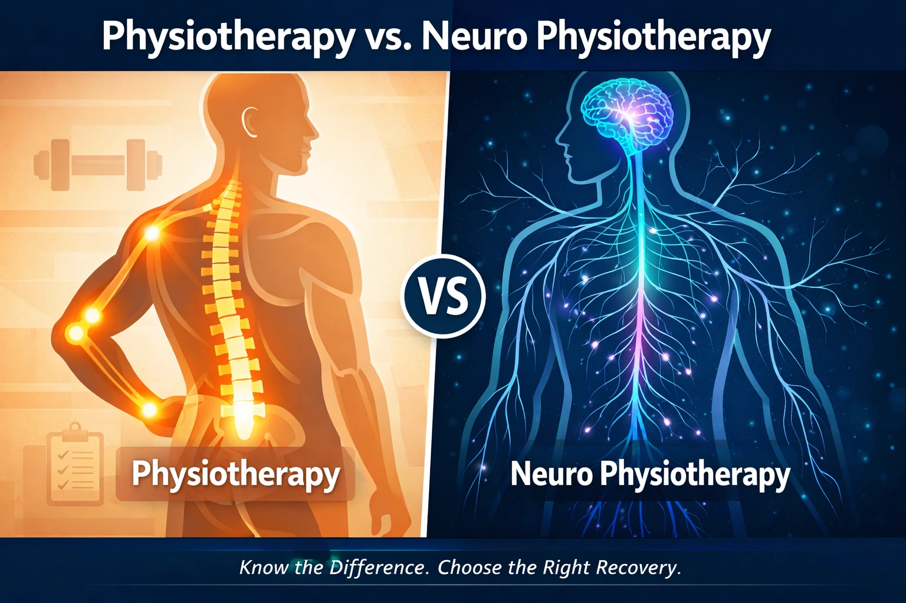

Physiotherapy vs. Neuro Physiotherapy: What's the Difference and When Do You Need Each?


10
MAR

Dr. Amol Kathar
MPT (Neuro), 3.5+ years clinical
experience in neurological rehabilitation
It was a regular Tuesday morning in Pune when 57-year-old Ramesh woke up and could not lift his left arm. His wife called it bad sleep posture. His son, panicking, Googled "arm weakness treatment" and found a general physiotherapy clinic nearby. Three weeks and twelve sessions later, Ramesh could flex his elbow a little better, but something was still deeply wrong. He could not walk straight. His speech was slightly slurred. The physiotherapist, as skilled as she was, had been trained in muscles and joints. She was not trained in what was actually happening inside Ramesh's brain.
What Ramesh had was a minor stroke. The three weeks spent on general physiotherapy, while the brain's critical healing window was wide open, were three weeks lost. When his neurologist finally referred him to a neuro rehabilitation centre in Pune, the specialist said something that stayed with his family: "The brain is most ready to rewire itself in those first few weeks. We can still help, but the earlier we start, the better the outcome."
Ramesh's story is not rare. Across India, thousands of families face the same confusion: Is physiotherapy the same as neuro physiotherapy? Do we need a specialist? Is what we are doing enough? This article answers all of that, clearly, honestly, and without medical jargon.
Quick Definition: Physiotherapy treats physical injuries to muscles, joints, and bones. Neuro physiotherapy is a specialized branch that treats conditions affecting the brain, spinal cord, and nervous system using the science of neuroplasticity.
Dr. Amol Kathar is the Clinical HeadThe Growing Reality: Why This Matters More Than Ever

Here is a number that should stop you in your tracks. According to the World Health Organization (2024), over 3 billion people worldwide are currently living with a neurological condition. That is more than 1 in 3 people on earth. The total years of healthy life lost to these conditions, measured as DALYs, have increased by 18% since 1990.
Closer to home, a study published in The Lancet Global Health found that the contribution of non-communicable neurological disorders to India's total disease burden doubled between 1990 and 2019. Stroke alone accounts for nearly 38% of all neurological disorder DALYs in India. And yet a huge portion of patients still walk into general physiotherapy clinics rather than specialized neuro rehab centers, as their very first stop.
What most people don't realize is that the TYPE of therapy matters just as much as starting therapy at all. Let's break this down properly.
What Is General Physiotherapy?
General physiotherapy, also called musculoskeletal or orthopaedic physiotherapy, focuses on restoring movement and function to the physical body. Think muscles, joints, tendons, ligaments, and bones.
Who It Helps
• People recovering from sports injuries, fractures, or ligament tears
• Patients after orthopaedic surgeries like knee or hip replacement
•People dealing with chronic back pain, sciatica, or arthritis
•Office workers with posture-related neck and shoulder issues
• Anyone with soft tissue injuries from accidents
How It Works
A physiotherapist uses hands-on techniques such as manual therapy, therapeutic exercises, heat or cold treatment, TENS (Transcutaneous Electrical Nerve Stimulation), and ultrasound to reduce pain, restore joint range of motion, and rebuild muscle strength. Sessions are usually 1 to 2 times per week for a few weeks.
The key point: General physiotherapy is excellent at what it is designed for. But it does not retrain the brain. It does not work with neuroplasticity. And when a patient has a neurological condition, that distinction is everything.
What Is Neuro Physiotherapy?

Neuro physiotherapy is a specialized branch of physiotherapy that treats people whose movement, balance, coordination, or strength has been affected by damage to the brain, spinal cord, or nervous system.
The Science Behind It: Your Brain Can Build New Roads
Here is the surprising truth about your brain: it is not fixed. The brain has a remarkable ability to form new neural connections even after serious injury. Scientists call this neuroplasticity. Think of it this way: if the brain's main highway gets blocked after a stroke, neuroplasticity allows it to build new side roads to reach the same destination.
Neuro physiotherapy works by actively triggering and accelerating this rewiring process. According to research published in PMC (Annals of Medicine and Surgery, 2023), innovative interventions including constraint-induced movement therapy (CIMT) and virtual reality-based training directly stimulate the formation of new neural pathways and enhance connectivity between damaged and healthy brain regions.
What a Neuro Physiotherapist Actually Does Differently
This is the part most websites completely skip. A neuro physiotherapist does not just give you exercises. Their hands-on treatment actually communicates directly with the brain. It facilitates input to the central nervous system to modulate muscle tone, release abnormal movement patterns, and re-establish normal, automatic function. Think of it as the therapist's hands having a direct conversation with the brain.
Techniques used in neuro physiotherapy include:
• Bobath (NDT): retrains normal movement patterns after neurological damage
• PNF (Proprioceptive Neuromuscular Facilitation): uses sensory input to trigger motor responses
• Constraint-Induced Movement Therapy (CIMT): forces use of the affected limb to rebuild neural circuits
• Robotic Rehabilitation in Pune: exoskeleton-assisted therapy that provides high-repetition, consistent movement training to promote neuroplasticity
• Virtual Reality Rehab: immersive environments that improve cognitive and motor recovery simultaneously
• Functional Electrical Stimulation (FES): uses electrical impulses to activate weakened muscles
Who Delivers Neuro Physiotherapy
A neurophysiotherapist has completed a standard physiotherapy degree plus additional specialized training in neuroscience, neurological assessment, and rehab techniques. Their initial assessment alone typically takes 60 to 90 minutes, because they are not just checking your joints. They are evaluating how your brain is communicating with your body.
Side-by-Side: Key Differences at a Glance
| Feature | General Physiotherapy | Neuro Physiotherapy |
|---|---|---|
| Primary Focus | Muscles, joints, bones | Brain, spinal cord, nervous system |
| Core Science | Biomechanics, kinesiology | Neuroplasticity |
| Treatment Goal | Pain relief, mobility, strength | Relearning movement, restoring neural control |
| Session Frequency | 1 to 2 times per week for weeks | Multiple sessions per week over months |
| Conditions Treated | Back pain, sports injuries, post-surgery | Stroke, Parkinson's, spinal cord injury, CP, MS |
| Team Involved | Physiotherapist | Neuro physio, OT, speech therapist, psychologist |
| Assessment Time | 15 to 30 minutes | 60 to 90 minutes (brain-body evaluation) |
| Works With Brain? | No | Yes, core to the entire approach |
When Do You Need Each? A Practical Guide
Choose General Physiotherapy When You Have:
• Back pain, sciatica, or a slipped disc without nerve damage
• Sports injuries such as sprains, strains, or ligament tears
• Recovery from knee or hip replacement surgery
• Frozen shoulder, tennis elbow, or plantar fasciitis
• Postural issues from long hours at a desk or computer
• Arthritis pain and joint stiffness
You Need Neuro Physiotherapy When You Have:
• Stroke of any type or severity
• Parkinson's disease or other movement disorders
• Spinal cord injury, whether complete or incomplete
• Traumatic brain injury or brain surgery recovery
• Multiple sclerosis (MS)
• Cerebral palsy in children or adults
• Guillain-Barre Syndrome or Bell's Palsy
• Balance disorders, unexplained falls, or coordination problems
• Paralysis or significant weakness with no clear orthopaedic cause
You May Need BOTH When:
• A neurological event has occurred alongside a pre-existing orthopaedic condition
• Post-spinal surgery involves both structural and nerve complications
• Older patients have simultaneous neurological decline and joint issues
• Diabetic neuropathy comes with musculoskeletal complications
What Most Websites Don't Tell You: The Wrong Therapy Risk
Here's the surprising truth: applying general physiotherapy techniques to a neurological patient, without neuro-specific training, can actually reinforce the wrong movement patterns. The brain learns what it repeatedly does. If incorrect compensatory movements are practiced during the brain's early recovery window, those wrong patterns can become permanent.
Research published in the Journal of Population Therapeutics and Clinical Pharmacology (2024) confirms that early rehabilitation initiated within 24 to 72 hours of stroke onset, using neuroplasticity-based approaches, significantly improves outcomes compared to therapy that begins weeks later. Yet traditional rehab is still routinely delayed for weeks in many settings.
This early window is sometimes called the critical period of neuroplasticity. It does not close completely. The brain retains the ability to rewire across a lifetime. But the rate and ease of recovery is greatest in those first weeks and months. Spending that window on the wrong type of therapy is one of the most preventable mistakes in neuro recovery.
The Emotional and Cognitive Side Nobody Talks About
Neurological conditions affect far more than movement. They affect memory, mood, communication, and a person's entire sense of identity. This is why it is formally recommended, as noted in peer-reviewed physical therapy guidelines, that neurophysiotherapists collaborate with psychologists when treating movement disorders. The combination of physical therapy and psychotherapy has been shown to improve neurological status in ways that neither therapy achieves on its own.
Most general physiotherapy clinics are not set up to provide this kind of multidisciplinary support. A true neuro rehabilitation centre is built for exactly this.
The Family's Role in Neuro Recovery (This One Is Often Overlooked)
If you are a family member or caregiver reading this, this section is written for you. Recovery from a neurological condition is not something that happens only during clinic sessions. The brain needs repetition, consistency, and emotional safety to rewire itself. What happens at home between sessions matters enormously.
Caregivers and family members need to be actively involved in the neuro physiotherapy process. Not only to ensure that exercises are being done at home, but also to support the patient's morale and emotional state. Studies confirm that a patient's attitude and willingness to engage directly affects their neuroplasticity outcomes.
Here is what families can do:
• Learn the home exercises from the neuro physiotherapist and gently guide the patient through them daily
• Create a calm, encouraging environment because stress and anxiety dampen the brain's ability to form new connections
• Track small wins: a slightly steadier step, a clearer word, improved grip. These matter neurologically
• Ask the care team regularly whether the current therapy is working and if progress is on track
• Watch for signs that therapy needs to be upgraded. If progress has stalled for more than 3 to 4 weeks, ask for a specialist review
Quick Decision Checklist: Which Therapy Do You Actually Need?

Ask yourself these questions honestly:
| Question | If YES, Consider... |
|---|---|
| Is the main problem pain or stiffness in a joint or muscle? | General physiotherapy |
| Did a doctor diagnose stroke, brain injury, or spinal cord injury? | Neuro physiotherapy |
| Is there weakness, paralysis, or coordination loss after a neurological event? | Neuro physiotherapy |
| Is speech, memory, balance, or swallowing affected? | Full neuro rehab team |
| Has a neurologist been involved in the diagnosis? | Follow their specific referral |
| Is the patient an older adult with both joint and neurological issues? | Both therapies combined |
| Has therapy been going for weeks with no clear improvement? | Request specialist review |
If you are unsure, do not guess. A formal neurological assessment from a qualified specialist is the safest and most effective first step.
How Apricot Care Helps Families in Pune Navigate This Decision
At Apricot Care Assisted Living and Rehabilitation, a dedicated neuro rehabilitation centre in Pune, the approach is built entirely around this exact problem. Rather than offering one-size-fits-all physiotherapy, Apricot Care provides a multidisciplinary neuro rehab model. Neurophysiotherapists, occupational therapists, speech therapists, psychologists, and dieticians work together around each individual patient's recovery plan.
Whether a patient needs advanced Robotic Rehabilitation in Pune to accelerate motor relearning, home-based therapy for those who cannot travel, or intensive in-patient neuro rehab, the team first assesses what each person genuinely needs before recommending a path. The goal is never to keep a patient in therapy longer than necessary. It is to get them back to real life, as completely as possible.
Wrapping Up: The Right Therapy at the Right Time Changes Everything
Remember Ramesh from the beginning of this article? He did eventually get the right care. Several months of specialized neuro rehab helped him regain most of his speech and significant mobility in his left side. His family wishes they had known the difference earlier, not because the outcome was bad, but because it could have been even better.
Here are the key takeaways from everything we covered:
• Physiotherapy and neuro physiotherapy are not the same thing. They target completely different systems in the body
• General physiotherapy is excellent for muscles, joints, and orthopaedic recovery
• Neuro physiotherapy works with the brain's neuroplasticity to restore function after neurological damage
• The early recovery window after a stroke or brain injury is critical, and the type of therapy used during that window matters enormously
• Family involvement, emotional support, and home exercises are not optional extras. They are core to neurological recovery
• A proper specialist assessment is the most important first step if any neurological condition is suspected
If your family is navigating the recovery journey from a stroke, Parkinson's, or any other neurological condition, the single most important question to ask your doctor today is this: "Should we be in neuro-specific rehabilitation?" The answer to that one question can reshape the entire recovery path ahead.
Frequently Asked Questions
Can a general physiotherapist treat neurological conditions?
A general physiotherapist can provide some support, such as maintaining joint mobility and preventing muscle wasting. But they are not trained in neuroplasticity-based rehabilitation techniques. For conditions like stroke, Parkinson's, or spinal cord injury, a neurophysiotherapist is strongly recommended.
How long does neuro physiotherapy take to show results?
It depends on the condition, severity, and when therapy begins. Some patients see meaningful improvements within 4 to 6 weeks of intensive therapy. Others, especially those with complex or chronic neurological conditions, may need 6 to 12 months or longer. Early intervention consistently produces better outcomes.
Is neuro physiotherapy available at home in Pune?
Yes. Many neuro rehabilitation specialists in Pune now offer home visit programs for patients who cannot travel. Home therapy also eliminates the fatigue of commuting and allows therapy to happen in the real-life environment the patient actually needs to function in.
What is the difference between neuro physiotherapy and occupational therapy?
Neuro physiotherapy focuses on restoring movement, balance, strength, and gait. Occupational therapy focuses on helping the patient perform real-world daily tasks such as dressing, cooking, bathing, and returning to work. In most neurological recovery programs, both therapies run in parallel and are most effective when coordinated.
Does insurance in India cover neuro physiotherapy?
Coverage varies significantly by insurer and policy. Many corporate health policies and some individual plans now include rehabilitation physiotherapy. It is worth checking directly with your insurer and asking for a detailed referral letter from your neurologist, which typically strengthens claims.
Can neuro physiotherapy help with Parkinson's disease?
Absolutely. While Parkinson's cannot be cured, neuro physiotherapy plays a proven role in slowing symptom progression, improving balance and gait, reducing fall risk, and maintaining independence for longer. Specialized programs like LSVT-BIG are designed specifically for Parkinson's patients.
Sources and References
1. WHO: Neurological Conditions Report 2024
2. The Lancet Global Health: Neurological Disorders in India, GBD 2019
3. PMC: Neuroplasticity in Stroke Rehabilitation, 2023
4. Journal of Population Therapeutics: Early Rehabilitation in Stroke Patients, 2024
5. PMC: Global Burden of Neurological Disorders
6. Wikipedia: Physical Therapy, Neurological Physiotherapy section
7. Frontiers in Public Health: Global Burden of Neurological Disorders 1990 to 2019
About
author
Dr. Amol Kathar is the Clinical Head and Neurophysiotherapist at Apricot Care,
Pune.
With 3.5 years of experience, he specializes in personalized rehabilitation for stroke, spinal cord injuries, and mobility training to help patients regain independence.
With 3.5 years of experience, he specializes in personalized rehabilitation for stroke, spinal cord injuries, and mobility training to help patients regain independence.